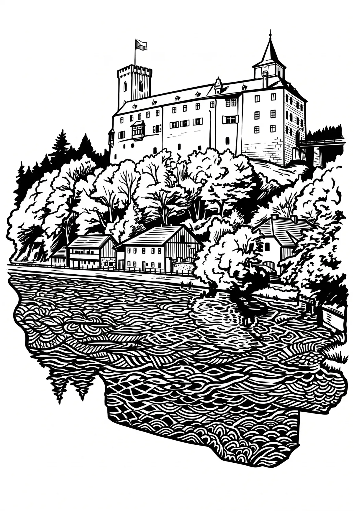

Hrad Rožmberk
Jihočeský kraj · 530 m n. m.

historická památka · #026
Rožmberk (německy Rosenberg) je hrad v Rožmberku nad Vltavou v okrese Český Krumlov, v Jihočeském kraji. V současné době je ve vlastnictví státu a je spravován Národním památkovým ústavem. Je zpřístupněný veřejnosti. Je chráněn jako národní kulturní památka České republiky.